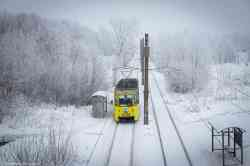

Фотоконкурс
Голосование · Победители · Рейтинг · Претенденты
Категория: Линии и пейзажи
В соответствии с регламентом фотоконкурса, вы не можете голосовать.
|
Нижний Новгород, 71-605 (КТМ-5М3) № 3488 — маршрут 417 Улица Переходникова 12 января 2025 г., воскресенье |
|
Москва, ЛиАЗ-6274 № 430181 — маршрут 538 Москворецкая улица 8 февраля 2025 г., суббота |
|
Пльзень, Tatra KT8D5R.N2P № 297 — маршрут 4 Sady Pětatřicátníků 14 декабря 2024 г., суббота |
|
Верхнесилезская агломерация, PESA Twist 2017N № 1046 — маршрут 14 Katowice, ulica Wiosny Ludów Август 2023 г. |
|
Москва, 71-931М «Витязь-М» № 31148 — маршрут 39 Большой Устьинский мост 16 февраля 2025 г., воскресенье |
|
Петрозаводск, МТрЗ-6223-0000010 № 397 Троллейбусный парк № 1 6 октября 2024 г., воскресенье |
|  |
Набережные Челны, 71-605А № 0125 — маршрут 8 Узел Хасана Туфана 10 февраля 2025 г., понедельник |

|
Санкт-Петербург, БКМ 32100D № 3122 — служебная развозка Исаакиевская площадь 29 января 2025 г., среда |
|
Прага, Tatra T3M2-DVC № 8076 — маршрут 23 Mariánské hradby 5 октября 2024 г., суббота |
Число проголосовавших: 59
Число голосов: 148
Голосование · Победители · Рейтинг · Претенденты
Тёмная тема
Использование фотографий и иных материалов, опубликованных на сайте, допускается только с разрешения их авторов.